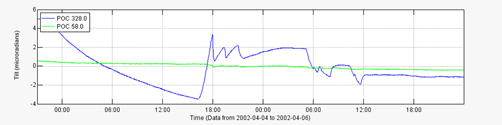
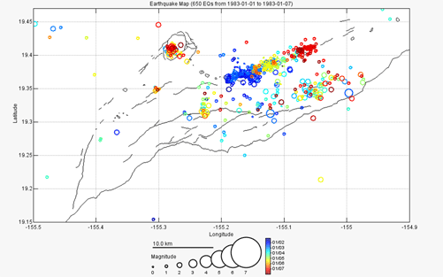
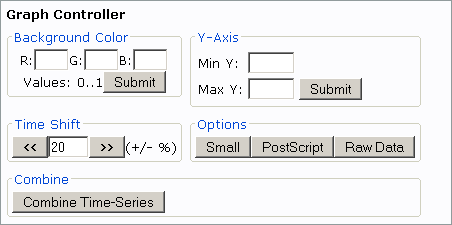

System Requirements System Requirements
Because of Valve's interactive UI, a modern internet browser is needed. It has been tested thoroughly and works with Internet Explorer 6 and Mozilla 1.4 or browsers that are based on Mozilla. Mozilla builds are available on a wide variety of platforms. JavaScript and Cookies must be enabled. Furthermore, your browser must support Java applets to use any 3-D graphs.
General Usage
Valve is a system that lets you visualize and analyze a variety of geophysical data sources from your web browser. The main user interface (UI) looks like this:

The UI is divided into separate sections (Deformation, Seismic, Gas, and Other in the image above). Each section contains a group of tabs (Tilt, Strain, GPS, Dry Tilt, EDM, Leveling in the image above), each of which usually represents a data source. Next to the main UI is the "Common Panel", this is used to specify time ranges and graph options.
The typical usage to generate a graph would go something like this:
- 1. Pick the appropriate section and tab.
- 2. Pick stations, output options, etc. from the tab.
- 3. Specify the time interval, typically using one of the time shortcuts generally available on the right side of each tab.
- 4. Specify any graph options.
- 5. Press Submit.
- 6. Interact with the graph.
Using the Common Panel

|
The common panel will look something like the image to the left, depending on
your browser and operating system.
Start Time
This is the starting time for a given request. Incomplete formats such as yyyy (e.g., 2002) are
rounded to the earliest time. Valid entry formats are:
| Format | Example |
| yyyy | 2002 becomes 200201010000 |
| yyyyMMdd | 20020405 becomes 200204050000 |
| yyyyMMddHHmm | 200204051200 |
| -#i | -30i is last 30 minutes |
| -#h | -2h is last 2 hours |
| -#d | -3d is last 3 days |
| -#w | -6w is last 6 weeks |
| -#m | -9m is last 9 months |
| -#y | -15y is last 15 years |
| All | All data, if supported |
End Time
This is the ending time for a given request. Clicking the 'Now' link
replaces the text with 'Now'. Incomplete formats are rounded to the latest time.
Valid entry formats are:
| Format | Example |
| yyyy | 2002 becomes 200212312359 |
| yyyyMMdd | 20020405 becomes 200204052359 |
| yyyyMMddHHmm | 200204051200 |
| Now | Data up until now |
Submit
Submit button: submits the request
Small graphs checkbox: the requested content are smaller, this is sometimes useful for plots
destined for web pages
PostScript checkbox: generates PostScript in addition (if applicable)
Raw data checkbox: generates raw data in addition (if applicable)
|
Interacting with Graphs
Most graphs that Valve produces allow extensive interaction. These graphs can be used to select time intervals on other graphs, select map bounding boxes, earthquake cross-sections. In general, a time-series graph will look something like the figure below (a time-series of a tilt event).

To select a subset of the time represented on the x-axis in this graph simply move the mouse over the graph (a red line and crosshair cursor will appear) and click the time the start and end times respectively. A green marker arrow will appear over the start time you selected and a red arrow over the end time. Or to set the time interval to exactly what is on the x-axis, click the clock icon on the graph menu bar. Of course, graphs that don't have time as the x-axis (like a frequency power chart) will not allow this. This functionality allows the user to quickly look at interesting time intervals on a variety of different instruments or to find interesting events and plot them in other, perhaps more insightful, ways. For example, a user could plot earthquake counts over a region for the last 25 years, select a time interval that has a swarm, then plot the swarm's hypocenters on an earthquake map.
Valve also produces many spatial plots. These plots can be interacted with to select area boundaries, assuming that the tab currently visible is 'interested' in boundary selection. A spatial graph will look something like the figure below (a hypocenter plot of a dike intrusion).

If the Valve UI was open to a tab that was interested in spatial boundaries or other user-selected spatial information, clicking on the spatial graph would provide that input. In the case of selecting a boundary for an earthquake plot, for example, simply click on the upper-left corner of the new boundary (a rubber-band type box will appear), then click on the lower-right. Unfortunately, due to browsers interpreting a dragged mouse as a drag-and-drop event, dragging (the intuitive way of selecting a space) the clicked mouse will not work.
Raw Data
If you selected raw data output in the common panel a link will be provided in the title bar of the graph to that raw data. To save the data to your computer, right-click on the link and select "Save link as..." or the equivalent in whatever browser you are using.
PostScript
If you selected PostScript output in the common panel a link will be provided in the title bar of the graph to a PostScript file. This file can be loaded into programs like Adobe Illustrator in order to produce publication quality plots. To save the file to your computer, right-click on the link and select "Save link as..." or the equivalent in whatever browser you are using.
Status Pages
Status Pages are web pages that present a large quantity of information in one place. They are generally created and maintained by your Valve administrator. A status page generally will contain many graphs that are updated automatically by Valve on an administrator specified time interval. Ask you administrator for instructions on how to create a status page.
Custom Data
Valve allows you to import your own custom data into the system in a quick, convenient way. Here is a step-by-step description of how to create your own custom data set:
1. Format your data in to the format Valve expects.
2. Create a folder in the Valve custom data folder (ask your Valve Administrator for the location of this folder). The name of the folder you create will then show up as a choice under Valve's "Custom" tab.
3. Copy your data files into the folder you created.
4. (Optional) The last optional, but very useful, step is creating a file that describes your data. The name of this file must be '<folder_name>.txt'. Read below for the format of this file.
Data File(s) Format Specification
- An attempt is made to read all files, except the data description file, in your custom folder as data files.
- The data files are simply tab or comma delimited columnar text files (easily exported from programs like Excel).
- The first two columns must be the time and location of the observation/measurement/data. Each column thereafter is arbitrary numeric data.
- The first column, time, can be in any parsable time format as specified below as long as it is described in the optional data description file or, if no such file exists, in this format: 'yyyyMMddHHmmss' (no quotes).
- The second column, station, is a text string that identifies where the data was gathered. Valve groups the data by station such that each station's data can be viewed independently. No spaces in station names!
- All subsequent columns are converted into double precision floating point numbers, any unparsable field is set to NaN (not-a-number).
- Input files are expected in UTC.
Data Description File
The data description file includes information about your data. It is a simple text file with each line specifying something about the data. The format for each line is this (no angle brackets):
<option>: <value>
Valid options are (case-insensitive):
TimeFormat |
A string that exactly specifies the format for time
Examples: yyyy/MM/dd HH:mm:ss.SSS, MM-dd-yy HH:mm, etc.
Refer here for more information on the date string specifiers. |
Column <#> |
A string that specifies one or more of the following options for the column, in this format:
<option1>=<value1>; <option2>=<value2>; <optionN>=<valueN>;
Valid column options (case-insensitive):
Name |
[a string] -- The name of the column, shows up in the output selection and on the graph's legend. |
Units |
[a string] -- The units for the column, shows up on the graph's axis legend. |
Style |
[a string] -- The output style, 'o': plot data points, '-': plot line, 'o-' plot both. |
Default |
[yes|no] -- Whether or not this column is checked by default in the output selection. |
Allowed |
[yes|no] -- Whether or not this column is allowed to be selected in the output selection. |
Detrend |
[yes|no] -- Whether or not this column should have the linear trend removed. |
SubtractMean |
[yes|no] -- Whether or not this column should have the mean of the column subtracted from it. |
|
Complete Example
Here is a complete example of a custom data set.
Directory [custom-data-path]/WidgetCounts:
File WidgetCounts.txt:
timeformat: MM/dd/yy HH:mm
column 1: name=Standard Widgets; default=yes; units=Widgets; style=-;
column 2: name=Complex Widgets; default=no; units=Widgets; style=-;
column 3: name=Temperature; default=no; units=Degrees C; style=-;
File WidgetData1.txt:
05/06/03 12:00,WIDGETFACTORY,37,3,10.6
05/06/03 12:10,WIDGETFACTORY,38,3,10.7
05/06/03 12:20,WIDGETFACTORY,37,3,10.6
05/15/03 23:30,WIDGETFACTORY,13,193,57.6
05/15/03 23:40,WIDGETFACTORY,12,196,57.8
File WidgetData2.txt:
06/06/03 12:00,WIDGETEMPORIUM,7,3,30.6
06/06/03 12:10,WIDGETEMPORIUM,38,3,40.7
06/06/03 12:00,WIDGETGALLERY,7,3,10.6
06/06/03 12:10,WIDGETGALLERY,38,3,10.7
With this set of files the following stations would be available in the WidgetCounts custom section: WIDGETFACTORY, WIDGETEMPORIUM, and WIDGETGALLERY. There would be three selectable columns: Standard Widgets, Complex Widgets, and Temperature. Only the Standard Widgets would be selected by default. Hopefully, before you draw any conclusions about widgets and temperature correlation you would have more than 9 data points.
Using the Graph Controller
The Graph Controller is used to make adjustments to a graph you have already created. The Graph Controller is activated by pressing its button:  . Pressing the button will popup this window: . Pressing the button will popup this window:

The various sections of the Graph Controller allow you to change many aspects of the graph.
Background Color: enter RGB values for the background color between 0 and 1. 0,0,0 is black; 1,1,1 is white; 1,0,0 is full red, etc.
Y-Axis: enter the minimum and maximum scale for the y-axis. This disables auto y-axis scaling.
Time Shift: generates the same type of graph but with the selected time shifted a user-specified percentage earlier or later.
Options: this regenerates the graph as if you had specified the option chosen.
Combine: after clicking the "Combine Time-Series" button click on another time-series graph in the Valve UI and Valve will join these two graphs into one. User beware though, you can create some pretty nonsensical graphs with this option.
|